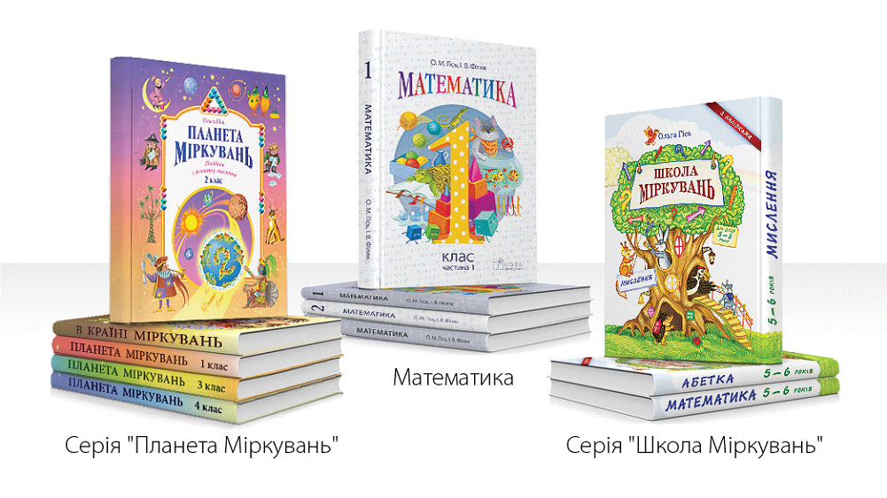
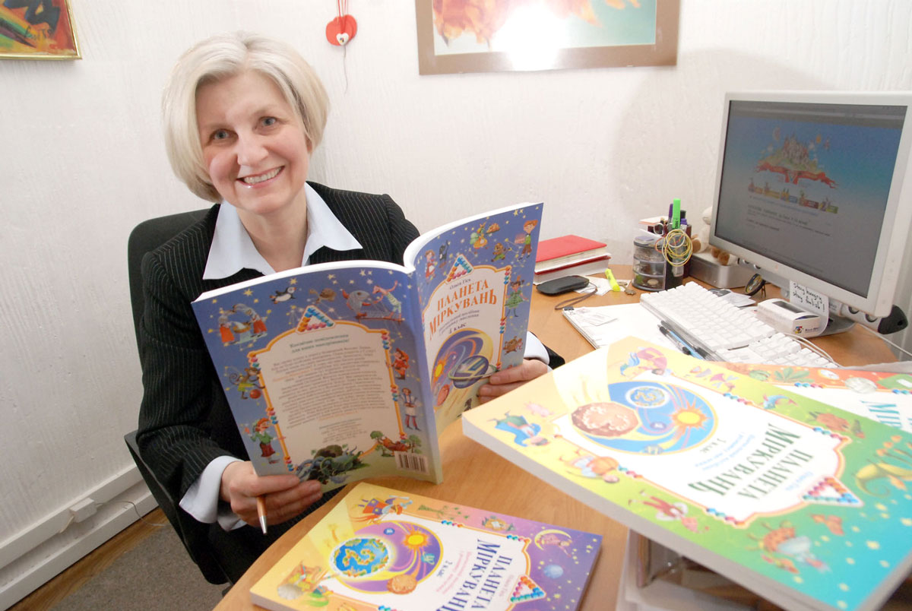
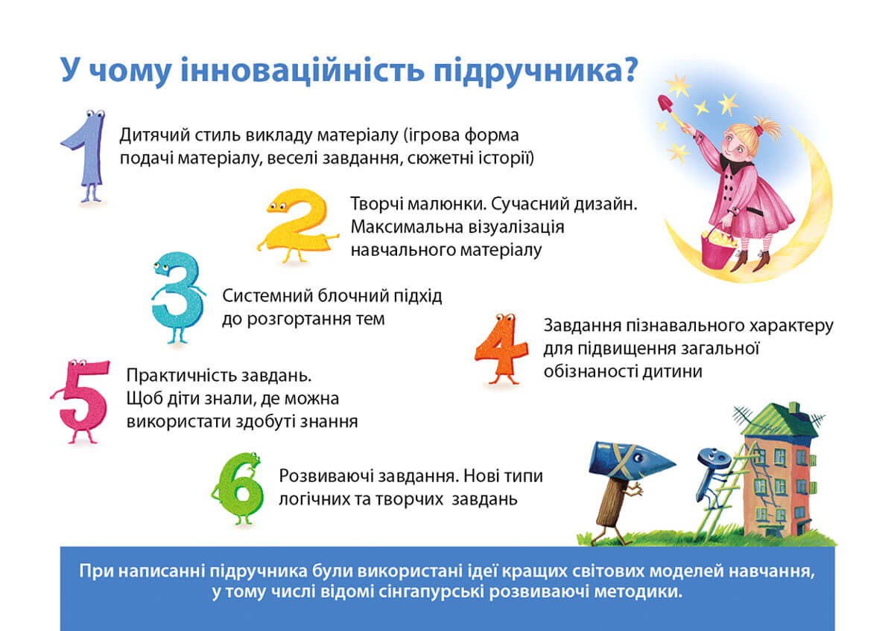
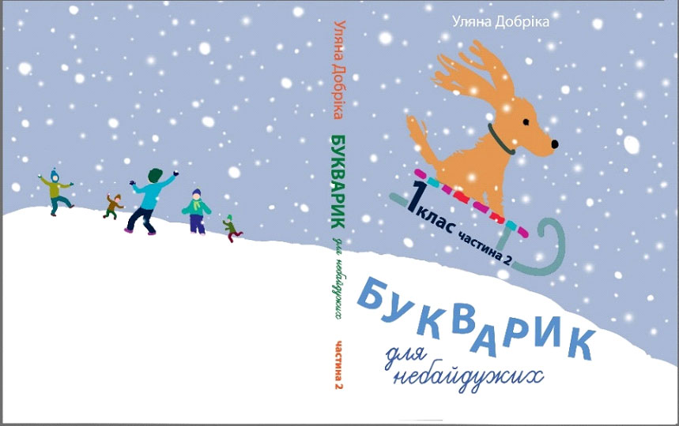
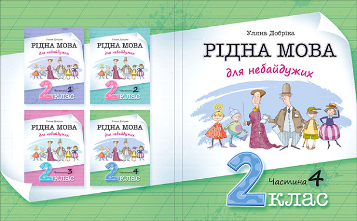
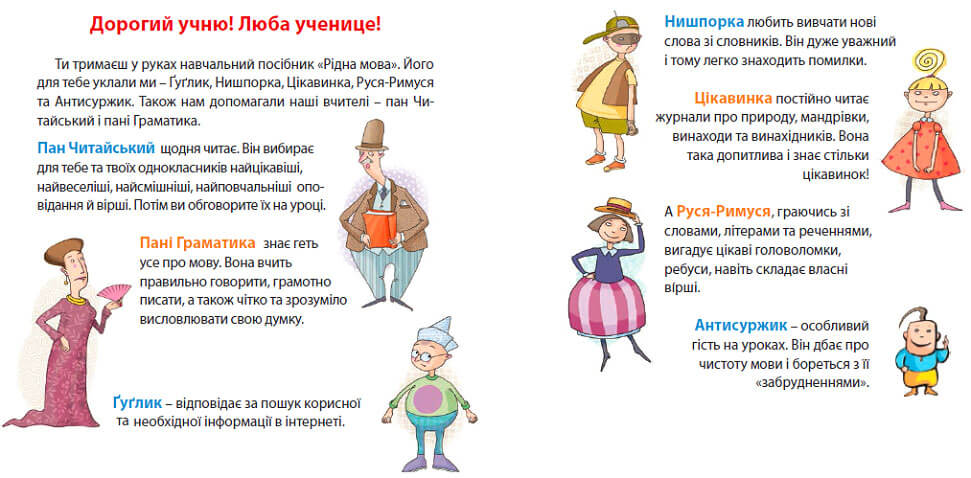

Чим цікаві авторські підручники та навчальні посібники, за якими вчаться учні Школи Вільних та Небайдужих , та у чому їхня перевага?
Дата 16.02.2021 Відповідь на ці питання дає Ольга Гісь- академічний директор Школи вільних та небайдужих (м. Львів), кандидат фізико-математичних наук, психолог, вчитель вищої категорії, лауреат міжнародної стипендії ім. Фулбрайта в галузі освіти.
1. Підручники з математики авторів Ольги Гісь та Ірини Філяк не лише повністю виконують Держстандарт початкової школи, а й містять деякі додаткові теми чи теми на випередження, які легко можна пояснити дітям даного віку.
На цьогорічному конкурсному відборі підручників для 4-го класу наш підручник з математики отримав найвищий сумарний бал серед усіх 9 експертних оцінок.
Цей підручник не лише навчає математики у веселому пізнавальному форматі, але й підвищує загальну обізнаність дитини. Так, підручник для третього класу побудований як мандрівка Україною. Розв’язуючи завдання, діти знайомляться з областями України, дізнаються про історичні, культурні пам’ятки свого краю, про те, чим українці прославили світ та які рекорди встановили, навчаються культури подорожей, спілкування, взаємодопомоги.
Підручник для четвертого класу − це мандрівка світом, де на кожному кроці стають у пригоді знання математики: як поміняти гривні на євро, скільки потрібно заплатити за готель чи паркування автомобіля, чи вистачить грошей проїхати платними дорогами і кілька разів заправити автомобіль, які продукти Україна експортує та імпортує, і тому подібні практичні завдання.
2. Серія навчальних посібників «Планета Міркувань» та програма з розвитку продуктивного мислення має на меті розвиток як логічного, так і нестандартного (евристичного) мислення дитини. У веселій та ігровій формі діти розвиватимуть своє продуктивне мислення, тобто здатність генерувати власні ідеї.
Мандруючи вулицею евристичного мислення, діти завітають у центр інтелектуальних тренінгів та національний парк ребусів, у палац асоціативних загадок, на фабрику мовних головоломок, в музей анаграм, музей метаграм, музей паліндромів, музей шифрограм та криптограм, у мистецьку школу образних порівнянь, інститут мовних досліджень та центр «сірникових» задач.
Повернувши на вулицю логічного мислення, можна потрапити у міністерство класифікації, інститут виділення суттєвого, супермаркет узагальнень, комітет мовних аналогій, пройтися кварталом омонімів, синонімів та антонімів. Тут діти можуть зайти у лабораторію з розробки методів підбору, центр дослідження перетину та доповнення множин, центр спостереження за властивостям чисел, музей переплутаних написів, дослідний інститут методів виключення, банк умовиводів. Важливо також не забути завітати до племені комбінаториків, навчитись складати таблички істинності та заглянути у печери геометричного мислення.
3. Серія інтегрованих навчальних посібників з української мови та читання «Букварик для небайдужих» та «Рідна мова для небайдужих» авторки Уляни Добріки знакові тим, що тут не лише навчають читати, писати та правил граматики. Це надзвичайно цікаві посібники, написані у веселій, гумористичній формі. Вони містять багатющий матеріал про Україну і загалом про світ.
 Це − тематичні посібники, тобто щотижня − нова пізнавальна тема, яка тісно переплетена з матеріалами з природознавства. Ретельно підібрані твори відомих поетів та письменників, сучасників та класиків, українських та закордонних. Цей посібник цікаво читати не лише дітям, але й дорослим, а, читаючи, мимоволі ловити себе на думці: «Як шкода, що ми у свій час не вчились за такими чудовими, життєрадісними підручниками».
Ось вони, веселі дружні помічники, які допомагали авторці писати цей посібник:
